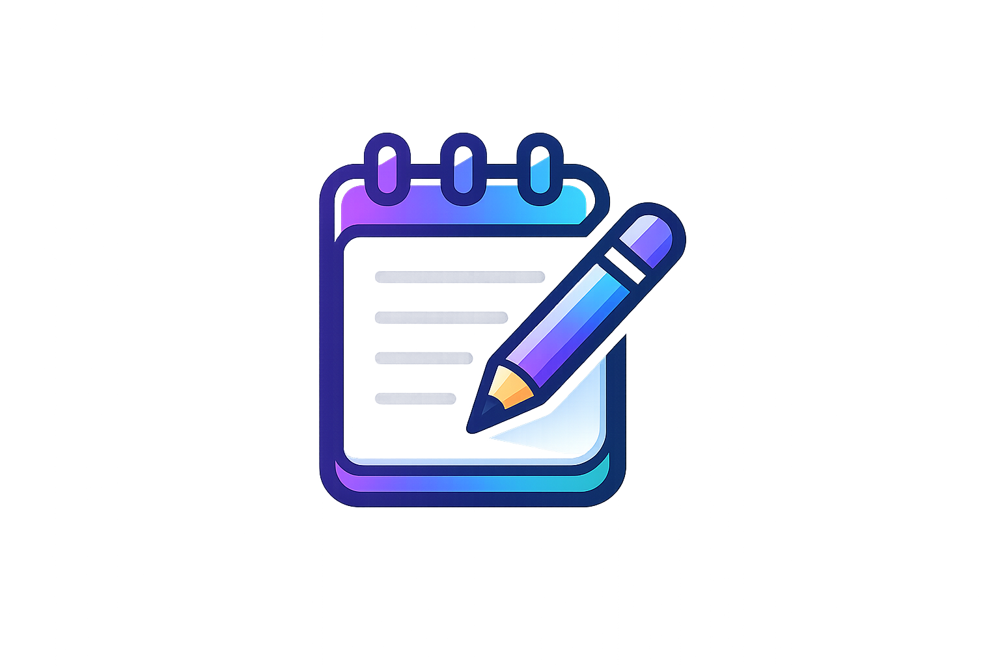

Backend Developer
Paideia Educational Solutions · Full-time · Nov 2021 – Present
Junior Backend Developer Portfolio
Junior Backend Developer with experience building APIs and backend systems using Python, Go, and full-stack projects that strengthen product thinking.
For recruiters and hiring teams
This page focuses on evidence, not only a project list: product context, key features, technology stack, and technical contribution areas that recruiters can scan quickly.
About
As a Junior Backend Developer, I specialize in building robust APIs, optimizing database queries, and designing scalable system architectures. I bridge the gap between complex backend logic and seamless user experiences, ensuring my code is not just functional but also maintainable and performant.
With solid hands-on experience in Python (FastAPI, Falcon) and Go (Gin), coupled with PostgreSQL database management, I thrive in environments that prioritize clean code, automated testing, and product-driven development.
LinkedIn profile
Paideia Educational Solutions · Full-time · Nov 2021 – Present
Computer and Network Engineering (TKJ) · Jun 2020 – May 2023
Focused on backend systems, database management, and clean maintainable code.
Selected work

AI-powered learning platform for Indonesian students (K–12) with tutor chat, practice questions, and gamification.
Anonymous topic-based chat bot with user matching, admin commands, and ban system.
YAML-driven QA runner that detects broken features and slow APIs with HTML/JSON reports.

Technical range
React, Next.js, Vite, TailwindCSS, responsive UI, dashboard flow.
Go Gin, FastAPI, Falcon, Node.js, REST API, auth, service layer.
PostgreSQL, Supabase, SQLAlchemy, Pony ORM, Drizzle, Docker.
Gemini integration, Playwright, API monitoring, reporting, CLI tooling (Typer, Jinja2).
Next step
Feel free to reach out via email or connect on LinkedIn. I'm actively looking for backend developer opportunities and open to discussing projects, collaboration, or any questions about my work.